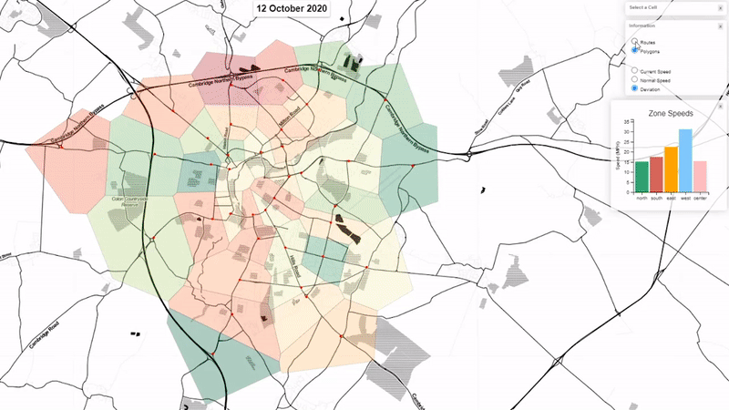

The visualisation displays Cambridge traffic data from a network of Bluetooth sensors deployed all around the city.
The Bluetooth sensor network consists of 38 sensors that collect data on average traffic speed throughout Cambridge.
This visualisation shows the data in real-time and displays how the current traffic speed deviates from the historical average in each of the 38 locations.
In order to better understand the visualisation, it is important to understand what we refer to when describing specific terms.
In general, the colours in the visualisation represent the traffic speed deviation from what is considered to be the "normal". Hence, to illustrate such deviations, the sensor-allocated areas and Roads (reffered to as Links below) between sensors are coloured using a Red-Yellow-Green gradient.
Throughout the visualisation, the red colour means that the traffic speed is slower than what is usually recorded, whereas green means that the traffic is faster. Yellow represents little to no deviation from the normal.
Links are a simplified representation of the Cambridge road network. Every Link represents a Road between two Bluetooth sensors.
Links are directional and are used throughout the visualisation to provide high granularity readings on the current state of traffic between any two sensors.
Links colours represent the current traffic speed deviation, hence following the Colour Scheme, red Links have a slower than usual traffic speed, whereas green ones are faster.
We refer to Cells as coloured polygons you see on the screen, every Cell (or a polygon) represents the area that is covered by each of the 38 sensors.
Just as with the Links, the Cell's colour represents the traffic intensity in the Cells surrounding area. The Cell's colour is calculated as the average of all the traffic crossing the Cell's boundary.
We refer to Zones as a group of Cells. There are five Zones in total - North, South, East, West, and Center.
Zone speeds are calculated by averaging Cell traffic speeds in a particular Zone. Zones speed comparison can be seen in bar chart on the right side of the screen.
Users are able to interact with the graph and select the Zone they wish to inspect in more detail (refer to Interaction).
The subsection below provides an overview of how the users can interact with the visualisation.

By hovering the mouse cursor over a Cell, the user is shown all in and out going Links from the Cell.
The traffic flow direction for every Link is shown by animating the line arc representing a single Link.
Upon hovering over a Cell, Cell's name appears that is derived from the real-world sensor location in Cambridge.

By clicking on a Cell users are able to inspect more specific information on the area in question.
More information is immediately displayed, such as the line graph on the bottom left corner showing the historical data for all Links coming in and out of the Cell, as well as the ability to select the date for which the information is displayed.
INSERT GIF HERE
INSERT GIF HERE
Users have the option to double click on two Cells of their choice to show the fastest route between them.
This can be done by double clicking on one Cell, and then double-clicking on another. This type of selection is differentiated from the normal (single-click) Cell selection by the dashed line surrounding the Cell's perimeter.

The fastest route feature calculates the lowest travel time between the selected cell, and hence is not a result of the shortest distance, but rather time. As a result, the sequence in which the Cells are selected matters, as fastest route takes into account the direction in which the user intends to travel to.
The Information bar permits users to select what the visualisation displays.
By default, the visualisation displays the speed deviation from average in the area surrounding the sensor. Users can alternatively select to see the current and historical speeds in all cells.

Alternatively, users can select to hide all Cells and just display the Links instead with their colour representing the speed deviation from the regular.
Upon clicking on a Cell, the website URL changes to represent the selection. Each of the 38 sensors has a unique id that is shown in the URL bar.
INSERT PNG HERE